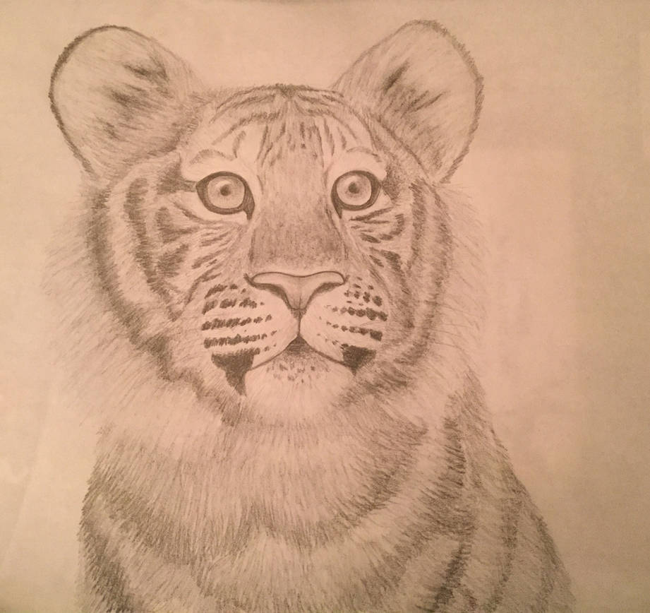
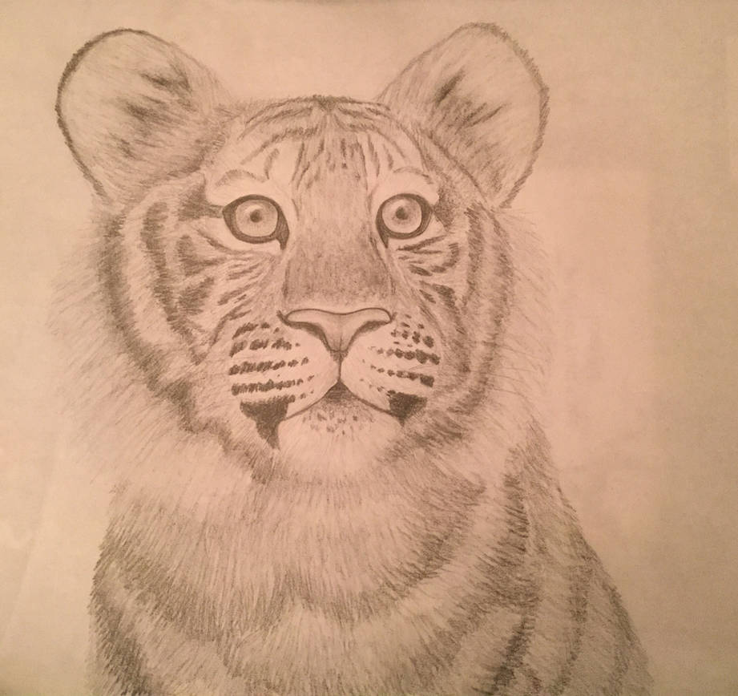
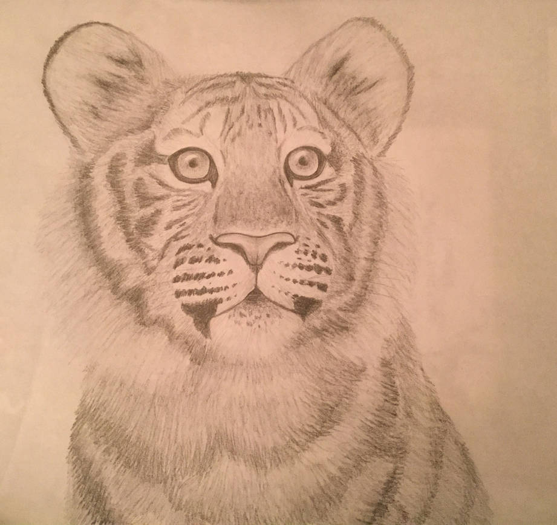

I have been drawing ever since I could hold a pencil, but I started taking it more seriously in elementary/middle school. Most of what I've drawn over the years has been fanart for my favorites, but I have also made my own characters and practiced realistic art. I enjoy drawing animals the most.
I also like practicing animation. I have been animating since I was 10. I've done stop motion and 2D animation, and one of my goals is to learn 3D animation. Animating takes quite a while, so I don't have as much time for it, but I like to revisit it once in a while!
